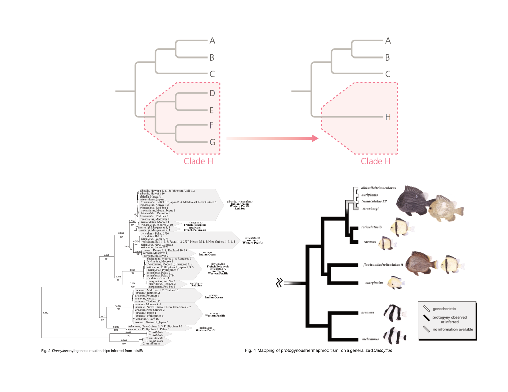
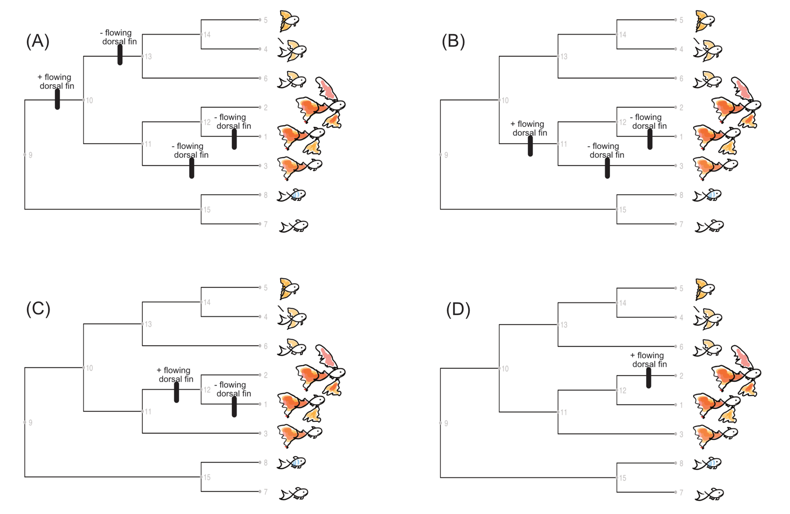

5 Understanding Evolutionary Trees
DRAFT 20250113
5.1 What is an evolutionary tree
Recall from Chapter 2 that one of Darwin’s great contributions was the idea that new species are formed by the splitting off from a pre-existing ancestor, forming a tree-like structure with species diverging from a common ancestor. As early as 1837, a year after he returned from his voyage on the Beagle, Darwin sketched in one of his notebooks a branching diagram representing the idea of descent from common ancestors, an image today that remains an icon of evolutionary thinking. Though there are others that were kind-of thinking along similar lines of “divergence from a common ancestor” and showing these relationships not as a linear process but more tree-like, it was Darwin who should and does get the most credit. He took this simple yet elegant idea of descent with modification as envisioned by a branching tree-like structure, and extrapolated it to all of life. In OTOS he wrote:
As buds give rise by growth to fresh buds, and these, if vigorous, branch out and overtop on all sides many a feebler branch, so by generation I believe it has been with the great Tree of Life, which fills with its dead and broken branches the crust of the earth, and covers the surface with its ever-branching and beautiful ramifications.
It is clear that Darwin considered this Tree Of Life as a fundamentally important to understanding “descent with modification”, so much so that the only figure found in the OTOS is a hand drawn branching diagram that today we would call an evolutionary tree, or phylogeny.
Today, evolutionary trees form the bedrock of modern evolutionary biology. Understanding how to correctly interpret evolutionary trees is absolutely essential to understanding modern evolutionary biology. This is true beyond understanding the relationship of closely related species, but ranges across the hierarchy of life, from the grand Tree Of Life on down to genes and proteins. Constructing evolutionary trees used to be difficult, sometimes highly subjective, certainly loaded with conflict. It took the better part of 30 years to resolve the issues surrounding the methodologies to constructing reliable evolutionary trees, with much of the progress driven by advances in molecular and genomic biology, statistics, and computer science.
In this chapter we will introduce phylogenetic trees with an emphasis on interpreting and understanding what they are, what they can tell us, and some common mistakes in interpreting evolutionary relationships from phylogenies to try to avoid. Later in the semester we will study how to actually build evolutionary trees in lecture and lab. But before we dive into the basics of evolutionary trees and how to understand and use them, we need to make a clear distinction between what we mean by Classification/Taxonomy and phylogenetics.
5.2 Classification and phylogenetics
Though closely related, Classification, and by extension Taxonomy, is in fact distinct from phylogenetics.
- Phylogenetic tree is an estimate of the evolutionary relationship among groups of taxa, where taxa can be genes, populations, species, and even higher order groups. As such, we consider phylogenies to be hypotheses that can/will change as new evidence, data, or methodologies emerge.
- Classification schemes are systems used to categorize and organize living organisms into unique groups. Their main purpose is to identify, name, and categorize organisms in some way that makes sense, usually by some measure of similarity (e.g. morphology). They tend to be rather stable.
Important: do not let me confuse you…
Throughout this OER I will be using the terms phylogenies and evolutionary trees interchangeably. They essentially mean the same thing, and I will use either one kind of arbitrarily depending on how it sounds or what is in my notes.
There have been numerous Classification schemes proposed by natural historians over the last century or so, some seemingly more “arbritrary” than others. Today we pretty much rely on a system based on shared characteristics, the so-called Linnaean system, which organizes organisms into hierarchical categories such as Kingdom, Phylum, Class, Order, Family, Genus, and species. I am confident you are comfortable with the Linnaean system, so will not go into much detail.
If you need a reminder of what the Linnaean system is, you can refer to this chapter in an online introductory biology textbook, or the this Wikipedia entry.
Taxonomy (the science of naming, describing, and classifying organisms into groups based on shared characteristics) is very focused on classification and identification, with a pretty strict set of rules when it comes to naming genera and species (perhaps a little less so at the higher levels). The goal is to assure that no two species bear the same name, such that when you are studying a particular organism, you have a fair amount of confidence that it is what you think it is.
Though related, Systematics on the other hand focuses on studying the diversity of organisms, investigating evolutionary relationships, and understanding the processes that lead to biodiversity. This includes reconstructing evolutionary histories (phylogenies), analyzing genetic, morphological, and ecological data, and exploring the mechanisms of speciation and adaptation.
Today, it is agreed that the best classification schemes are those that reflect evolutionary relationships, i.e. phylogenies (though this was not always the case). Most systematists, though there remain a few hold-overs from past antiquated arguments, understand that the best classifications should consist of monophyletic taxa only and thus reflect phylogenetic relationships.
- Monophyletic: taxon is one that includes all the named descendants of a particular common ancestor
- Paraphyletic: taxon includes some, but not all, of the descendants from a particular ancestor
- Polyphyletic: taxon includes species that do not exclusively share a common ancestor
We will dive more into and clarify these terms later. The key points here is that
The best classifications should reflect evolutionary history
Evolutionary history is best represented by phylogenies.
For the remainder of this chapter we will discuss it is essential to have a clear understanding of what phylogenies are, how they are constructed, and how to interpret them correctly.
5.3 Phylogenetic trees
Before discussing what the components of an evolutionary tree are, it is worth while to take a step back to discuss the two generalized processes in evolution, namely anagenesis and cladogenesis.
Anagenesis is evolutionary change of features within a single lineage, say a species or a population.
Cladogenesis on the other hand is the branching of a lineage into two or more descendant lineages.
When Darwin proposed species forming by splitting from a common ancestor, he was evoking cladogenesis. Cladogenesis is often (but perhaps not always) followed by anagenesis in each of the descendant lineages such that they become different from each other via various mechanisms. This can lead to increasing divergence between the two taxa over time, i.e. divergent evolution. The two processes of anagenesis and cladogenesis can be reflected in phylogenetic trees (depending on the method used to construct the tree): cladogenesis as the branching patterns seen in the tree, and anagenesis by the length of the branches, but only in some specific methods of constructing evolutionary trees. More on this idea of reflecting anagenesis on an evoutionary tree later in this OER.
Other types of evolutionary phenomena can also be shown on a phylogenetic tree, for example extinction and reticulation (when two lineages merge), but for our purposes, we will focus on what we call a bifurcating tree for the time being.
5.3.1 Anatomy of an evolutionary tree
Before describing the components of an evolutionary tree, the following terms are important to understand:
topology : this is the branching pattern of tree. It indicates evolutionary relatedness. For example, in th figure above species A and B share a recent common ancestor that was not shared by the other species and are therefore called “sister taxa.” Similarly, species D and E are sister taxa. Species F is the most distantly related of the sample of species and is known as the “outgroup.”
clade : a relative term for a group of taxa that are related by a common ancestor, or from the opposite perspective, it is all the lineages derived from a single recent common ancestor. For example, in the figure above, A and B can be considered a clade. Likewise A, B, and C can also be considered a clade. D and E can be considered a clade, as can A, B, C, D, & E. However, A and D can not be considered a valid clade, since you are excluding other lineages that are derived from the common ancestor connecting A & D.
Common Ancestor (CA) : A lineage (often designated as a taxon) from which two or more descendant lineages evolved. Internal nodes mark common ancestors between two lineages.
More Recent Common Ancestor (MRCA) : The youngest ancestor shared by all members of a specific set of taxa. This ancestor represents the point in evolutionary history where the lineages of the taxa diverged from one another, represented by the internal node where the branches of the descendent lineages meet.
The following figure is a very simple phylogenetic tree showing the relationship among 6 taxa. Though very simple, it contains most of the key elements found in an evolutionary tree, which are defined below.
- Taxa : General term for the items at the ends of a tips of a tree. Taxa can be most anything really, though we usually think of species as taxa. However they can also be genes or regions of a genome, or even higher order systematic levels. It all depends on the what evolutionary history the tree represents. For that reason, you will often see the term OTU (Operational Taxonomic Unit) used in exchange for taxa.
- Node : A branching point in a phylogenetic tree; can be either internal or terminal.
- Internal node : Represents a (hypothetical) common ancestor of two lineages; a splitting event, or inferred lineage splitting (e.g. speciation) events that give rise to descendant sister groups—in other words, they represent the common ancestors from which two or more related lineages are descended.
- Terminal node : Tip of a branch/lineage that defines taxa, e.g. OTU or taxa names.
- Branch : also referred to as a lineage; the “lines” of a phylogenetic tree that connect either two nodes (internal branch) or one node with a tip (terminal branch); also called edges.
- Root : If the tree is rooted, the node/branch at the base of the tree; represents the most basal portion of the tree, or the most recent common ancestor (MRCA) of all the taxa on the tree.
- Outgroup : In a rooted tree, a taxa or group of taxa used to define the root the tree. The outgroup IS NOT the root of the tree, but helps to define where the root of the tree is. The root indicate the last common ancestor (i.e., the deepest internal node) shared by the entire group of species. The term basal lineage is sometimes used to describe the outgroup, but this term if often misunderstood so best not to even use it.
- Ingroup : Those taxa that are of primary interest, i.e. the taxa for wish you wish you estimate the evolutionary relationship
Generally speaking, there is some level of directionality to the tree if it is a rooted tree such that the base or root of the tree represents the past (more ancient) while the tips are the more recent (present). This does not mean that all trees accurately represent when a particular lineage diverged. That requires a special type of tree, which we will explain later. At this point, understand that the root of the tree is the most ancestral, while the terminal nodes (tips) are the most recent.
5.3.2 Evolutionary relationships are determined by the sharing of common ancestry
Since evolution occurs via the splitting from a common ancestor, then we define evolutionary relationships via the sharing of common ancestry. If two taxa share a more recent common ancestor with each other than they do with a third taxa, then those two taxa are more closely related to each other than they are to the third. As with the discussion on tree as mobiles, it is all about the sharing of Most Recent Common Ancestry (MRCA).
Perhaps an example will help. Panel A in the figure below shows a well accepted phylogeny or the Old World primates.
To determine evolutionary relationships, basically you simply trace down the tree to find that internal node that connects the two taxa of interest; that node represents their MRCA. Based on tree in Panel (B), we would say the humans are more closely related to chimpanzees than they are to gorillas since they share a MRCA (node 1, path in red) with chimps than they do with gorillas (node 2, path in green). Likewise, as shown in Panel (C), humans are more closely related to gorillas than they are to orangutans since they share a MRCA with gorillas (node 2, path in green) than they do with Orangutans (node 3, path in orange).
A source of confusion to many students when they first try to make this transition to “tree thinking” is that they tend to focus on the number of nodes connecting two taxa rather than the sharing of a MCRA. For example, in Panel (D) in the figure above we would say that Gibbons are equally related to Orangutans as they are to Chimpanzees since Gibbons share the same MRCA (node 4) with Orangutans (path in blue) as they do with Chimpanzees (path in purple). Even though when tracing back through the tree we pass by only 3 nodes between Gibbons and Orangutans (path in blue) but 6 nodes between Gibbons and Chimpanzees (path in purple), from an evolutionary perspective we would still consider Gibbons to be equally related to Orangutans as they are to Chimpanzees: it is the sharing of the MRCA (node 4) that determines evolutionary relationship, not how many evolutionary events occurred after splitting from that common ancestor.
Another source of confusion some students have is tending to equate evolutionary relationship as shown by a phylogeny with evolutionary divergence. Though these two concepts can be related, they need not be. Divergence is some measure of how different two taxa are, be that from a genomic or phenotypic perspective. A lineage can undergo extensive divergence from a sister taxa after splitting from a common ancestor (remember anagenesis?), yet the evolutionary relationship as demonstrated by the topology of an evolutionary tree would be just the same even if there was little divergence. The lesson here is to be careful about the language being used, such that we are not confusing these two very important processes.
5.3.3 Evolutionary trees are like mobiles
Evolutionary trees are actually two dimensional representations of a three dimensional object, like a mobile lying on the table. If you were to pick the mobile up and hang it on the ceiling, the various parts can rotate around the internal points; it has three dimensional qualities. With an evolutionary tree, the various lineages can rotate around their nodes just like a hanging mobile.
This is very important to recognize. It tells us that when interpreting an evolutionary tree, you should not pay too much attention as to which taxa are next to each other, but rather focus on how taxa are connected by internal nodes. All internal nodes can be rotated without changing the topology. For example, the figure below shows the evolutionary relationship among a subset of mammals. Even though the four trees may look different, they actually are exactly equivalent to one another. This is because it is the order of branching events—the topology—that is relevant, not the order of the taxa at the tips. Each internal node can be rotated without affecting the topology because this does not alter the groupings of species.
For example, to convert our original tree (A) to (B), all you need do is rotate around the node labeled as 2. By rotating node 2, elephants (Loxodontia) + armadillos (Dasypus) retain sister taxa with their relationship to the other mammals retained even though they now are found on the “top” of the tree. Likewise to go from tree (B) to (C), simply rotate around node 3, and from (C) to (D), rotate around node 4.
Take a close look at the figure above, and using what you learned above about MRCA defining evolutionary relationship, convince yourself that the four trees above are indeed showing the exact same evolutionary relationship indicated by the branching pattern by tracing the pathways through CA.
5.3.4 Phylogenies may be drawn in many different styles
So far the trees shown in the chapter have been very simple in both structure and style. However, that is not always the case. Phylogenies can be simple and straight forward as the ones shown above, or they can be elegant and information rich. It all depends on the information that the author is trying to present and the method used to construct the phylogeny (more on this later).
The image below taken from Herron & Freeman (20xx) gives one example of how the same evolutionary relationship can be shown using different styles. Though at first glance one may think the four trees are different, they actually show the same evolutionary relationships among the various extant (not extinct) Felid lineages.
Notice that the trees can be oriented horizontally, vertically, or even as a circle. The internal branch points can be shown as angled or rectangular, or they can stylized as curving (these used to be called “swoopograms”). The key point here is not to be confused by how the tree looks, but focus on the topology itself.
Prove to yourself that these four trees all show the same evolutionary relationships.
And they can seem even more complicated than just those four. The figure below shows many different styles of trees, yet they all demonstrate the same evolutionary relationship.
The following video by JD Laurence-Chasen, a former student of Casey Dunn’s at Brown University, does a great job summarizing many of the issues discussed so far. It is worth checking it out as a way to test how well you understand what we just went over.
5.3.5 Branch lengths on a phylogeny can either have meaning or not, depending on the method used to construct the tree.
A generalized term for all types of evolutionary trees is a dendogram. When an evolutionary tree is showing only the evolutionary relationships among the various taxa (OTUs), it is referred to as a cladogram. All the trees shown so far in this chapter have been cladograms. Remember, the branch lengths in a cladogram are effectively meaningless. They can be longer or shorter depending basically on esthetics, so long as they do not alter the branching pattern.
However, there are methods used to construct trees that specifically estimate the levels of divergence among taxa. This is most certainly true for molecular and genomic data. We will dive into the specifics of how to estimate an evolutionary tree, particularly using molecular or genomic data, in a later chapter. For our purposes here, when these types of methods are used, the branch lengths on the resulting trees do have meaning; the longer the branch, the larger the level of divergence. The figure below gives a very simple example of how these trees look.
In this figure:
Panel (a) is a cladogam. Similar to the trees shown earlier in this chapter, the branch lengths have no real meaning. These types of trees are simply showing the branching pattern (topology)or evolutionary relationships among the taxa.
Panel (b) shows a tree where the branch lengths do have meaning, i.e. they are estimates of the degree of genetic or morphological divergence among taxa. It shows the same evolutionary relationship among taxa as in (a), but includes information on the level of divergence between nodes. This type of tree is often referred to as a phylogram. Phylograms typically include a scale bar some where to indicate how much change is reflected in the lengths of the branches. Total divergence between two taxa is determined on by adding up the length of the branches connecting them: from one species to their CA plus from the CA to the second species. These types of trees are very common in the leterature today since it is pretty much agreed the best data for constructing a reliable evolutionary tree is molecular or genomic data, which naturally lend itself to providing estimates of divergence. Again, more on this later.
Panel (c) is sort of a modified phylogram called a chronogram. The branch lengths still have meaning, but note that the terminal nodes are aligned with each other and the internal branch lengths are scaled in such a way that the internal nodes are aligned with the estimated date of divergence. This very special type of tree is only used when you can calibrate or convert the levels of divergence into time in some way, say when you have a reliable fossil record for the taxa of interest or are using molecular data that have been calibrated in some way to reliably convert levels of genomic divergence into time. This type of tree is also referred to as ultrametric tree or time-tree. These types of trees are not without controversy, but nonetheless very useful. As an example, take a look at Time Tree of Life website.
Can you tell which type of tree you are looking at just by how they look? Not always, particularly when a lot of creative license was used to make the tree informative. The best way to figure it our is to read the Methods section of the paper, something I strongly recommend you do. However, there are some clues.
- Cladogram : If terminal taxa are all aligned along the same axis, and the branch lengths lengths seem to have a pattern in terms of different lengths, then you probably have a cladogram. The tree does not need to be rectangular as above, and in fact are often angular, “swoopograms”, or circular trees.
- Phylogram : If the terminal taxa are located at various locations within the figure (not along a single straight axis), the branch lengths are clearly quite different along the tree, and there are either numbers along the branches (usually real numbers) or some sort of scale showing how much divergence is represented by a set distance, then you have a phylogram. These types of trees are usually quite obvious, and can get a little busy owing to the methods used to construct them. Nonetheless, staggered taxa names, probably a phylogram
- Chronogram : In this case the terminal taxa will all be aligned along a single axis, but the internal nodes will be distributed along an axis reflecting the estimated date of divergence. In this type of tree, you almost always will see some type of time scale (for example in millions of years, or as a geological time scale) in the same orientation of the tree such that you can trace down to the that scale from any internal node and get an estimate of date of divergence for the lineages splitting off the MCRA. Notice the scale along the bottom of the tree in Panel (c), though it is a little difficult to see in this figure.
5.3.6 Trees can be either rooted or unrooted
All the evolutionary trees presented in this chapter so far have been rooted trees, meaning that the basal position of the tree has been set giving the tree a temporal directionality. To simplify, a rooted tree can be read as indicating the earliest ancestor at the root or base, from which all other lineages on the tree have descended with the terminal nodes being the most recent: rooted evolutionary trees indicate the passage of time beginning from the root (oldest) to the terminal nodes (youngest). (However, the exact placement of nodes on a rooted tree is not necessarily indicative of the date of divergence unless it is an ultrametric tree.) The following figure shows both a rooted and unrooted tree that have the same branching pattern for the taxa.
To reiterate, a rooted tree has temporal directionality going from the root to the terminal branches as indicated in the figure. An unrooted tree does not.
That there are also unrooted trees may seem a little puzzling at first. There actually are a number of good reasons for why an unrooted tree may be useful, but for our purposes the main reasons why are (a) the methodology used to construct the tree, and (b) that we may not know what would best represent the ancestor leading to the taxa in question.
DEFINITIONS - a reminder of these two important terms
ingroup - those taxa of interest when estimating a phylogeny.
outgroup - A taxon or group of taxa that, based on prior evidence or information, is more distantly related to the taxa of interest on a phylogeny. These should be relatives of the ingroup but less closely related to them than the members of the ingroup are to each other.
Because we do not usually know what the ancestor of our ingroup may have looked like, we can use an outgroup to approximate the ancestor since the outgroup and the ingroup form two branches that diverge from a common ancestor, or in this case our putative ancestor.
Defining and using outgroups used to be a somewhat contentious issue, as with just about everything associated with phylogenetics and cladistics used to be. This more so with morphological than molecular data. Conceptually it is a pretty standard and straight forward process, though you should be cognizant to try to use an appropriate outgroup. How do you know what is an appropriate outgroup? Not an easy question to answer, but generally speaking if you choose a group of taxa that are closely related to the group of taxa that you are trying to determine the evolutionary relationship of (your ingroup), you should be ok. For example, if you are interested in the evolutionary relationship of a group of species within a genus, then using a different genus outside the one of interest that the literature suggests is closely related (e.g. in the same Family), then generally speaking you should be ok. This is not always simple to do, and can be quite challenging with some types of molecular data, e.g. studying the relationship of gene family members. In cases where it is difficult or even inappropriate to include an outgroup, there are other methods for rooting a tree (e.g. mid-point rooting), but be aware they may be controversial in terms of giving the tree a true time directionality.
How do we root a tree? The following figure does a very good job explaining the concept of rooting a tree graphically:
Conceptually to root a tree, you are grabbing the branch connecting the outgroup to the ingroup and pulling the tree up such that the root of the tree, the putative ancestor to both the ingroup and outgroup, marks the base of the tree, as shown in Panel (A). It most definitely can make a difference in terms of where you root your tree, as shown in Panel (B). Note that in the tree on the left in Panel (B), taxa [a+b] form a monophyletic group with taxa c more closely related to [d+e+f] than [a+b], whereas in the right most tree taxa [a+b+c] form a monophyletic group, with c more closely related to [a+b] than it is [d+e+f].
Note how I phrased the relationships among various taxa in the above paragraph. It is very important that you become comfortable with the language of phylogenetics (e.g. monophlytic groups, sister taxa, MRCAs) when working with evolutionary trees. It may seem a little cryptic or clunky at first, but trust me, it is the best way to describe evolutionary relationships and prevent confusion or outright mistakes.
As with most everything in phylogenetics today, rooting trees can be easily done using any of the more common phylogenetic analysis programs out there. You basically just click or name your outgroup and the program does it all for you. The underlying algorithms (program steps) behind doing the actual rooting can be a little complex and beyond the scope of this OER, but nonetheless very simple to do.
Many programs will produce an initial tree that is either rooted arbritrarily or use mid-point rooting, basically the half way point in the tree. It is then up to you to define the outgroup using whatever the steps the program implements: read the manual to find out.
5.3.7 Phylogenies can be fully resolved…or not
Depending on the nature of the data and methods being used, most times the trees generated are consistent with how we discussed evolution occurring in previous chapters, divergence from a common ancestor that can be represented by two lineages diverging from a common ancestor (node). We refer to this type of tree as a bifurcating tree. All of the trees we have shown so far have been fully bifurcating trees, or fully resolved trees. This need not always be the case for a number of reasons.
When for whatever reason we can not reliably determine the branching pattern among descendant lineages from a common ancestor, we show this on a phylogeny as more than two branches diverging from a single node, what we refer to as a polytomy. For example, below is a phylogeny of mammals showing a fully bifurcating tree and one with an arbitrary polytomy.
Note how in the tree on the right we can not determine the relationship among the four taxa (bats, cats, whales, and horses; in reality this relationship is very well resolved).
There both soft and hard polytomies. A hard polytomy is when multiple divergence events occurred in very quick succession, giving rise at effectively the same time to more than two lineages (i.e. reflects the “true” evolutionary history). A soft polytomy on the other hand is due to uncertainty about branching order due to other reasons; in other words it is not really a reflection of true evolutionary history of the group. They are usually considered a methodilogical artifact or insufficient data (e.g. not enough data, or the type of data used was inappropriate to resolve the branching pattern). In these cases the polytomies may potentially be resolved by more or a different type of data or a different analytical approach. These type of issues are beyond the scope of this OER, and probably are best left for an advanced course in molecular phylogenetics or phylogenomics.
5.3.8 Phylogenies can also be represented by networks
When we think about reconstructing evolutionary histories using phylogenies, we implicitly assume that evolution occurs via the splitting from a common ancestor (cladogenesis) that lends itself well to be represented by a bifurcating phylogenetic tree. However, biological systems being what they are, that is not always the case. For example:
In some instances lineages may come back together after splitting from an CA, a process called hybrid speciation (we will explore this in more detail when we look at species and the process of speciation).
Portions of a genome may cross species boundaries for various reasons, a process referred to horizontal gene transfer.
The nature of the data itself may not be best represented by a bifurcating process, for example multiple independent mutations occurring in a region of a genome (e.g. alleles at a gene or mitochondrial DNA haplotypes)
Inconsistencies in the patterns of divergence among different regions of the genome.
For these (and other) reasons, evolutionary relationships are better represented using methods other than bifurcating phylogenetic trees, most notably by what we call networks. Networks can be shown in various ways depending on the nature of the data and the analysis used. Below are a couple of examples of networks.
Actually, phylogenetic trees themselves are considered a specifc type of network, and certainly it is easy to see that an unrooted phylogenetic tree is most definitely considered a network. Like an unrooted phylogeny, networks have no time directionality associated with them. However, the branch lengths can reflect levels of divergence (but not always), and you can approximate evolutionary relationships via the sharing of MRCA if appropriate.
Bottom line, networks may look different from standard phylogenetic trees, but they still represent the evolution patterns of taxa, and are extremely useful in a number of circumstances. Lately there has been increasing interest in the use of networks due to the increasing advances being made in genomics and the analysis of genomic data, particularly in the emerging field of phylogenomics.
We will discuss networks more in the chapter on constructing evolutionary trees.
5.3.9 Oftentimes trees are drawn by compressing the number of taxa shown to make them more readable.
There are many instances when there is simply too much information to be clearly shown on phylogenetic tree, for example when you have a large number of taxa, so large that the greater point, e.g. higher order relationships, gets lost in forest that is the tree. In that case, it is not uncommon for the authors to collapse clades in the published figure in order to emphasize or summarize the information in clear, succinct manner. Below is an example of compressing the number of taxa on a tree to make it more readable.

The top figure shows in a stylized fashion how collapsing a clade can make the tree a bit more readable. The bottom of the figure shows an example of how collapsing clades help to shift the emphasis of a figure, allowing one to focus on the information that is most important. The tree on the left is a phylogram including all the samples, while the tree on the right collapses the major monophyletic clades to a single branch, making clear the evolutionary relationship of the different species in a genus of damselfish.
Collapsed clades can be shown in any number of creative ways, usually as triangles. There are numerous programs to help with these types of tree manipulations.
5.3.10 Evolutionary trees can contain both extinct (fossil) and extant taxa
Depending on the evolutionary question being asked, it may be quite useful to include fossil taxa onto a tree should they be available. There are lots of different ways to do this, some more straightforward than others. We will not go much into this at all, but just be aware that methods exist to incorporate both extinct and extant taxa (OTUs) to a tree. Usually we do this using time-trees (ultrametric) with the terminal node of the extinct species set to the estimated date from the fossil record. The figure below provides a very nice example of such a tree.
First note the time axis along the top of the figure, clearly indicating this a time calibrated tree. Next, notice that the extant taxa (ray finned fish, Coelacanth, Lungfish, and Living tetrapods) are all aligned along a single axis to the far right of the tree, while the branches of the extinct taxa do not. You can get a rough estimate of when a particular extinct taxa split from its common ancestor (for extinct taxa, when they first appear in the fossil record), and for fossil taxa the approximate date of extinction (when it last appears in the fossil record) by simply reading the dates along the time axis that correspond to the internal nodes and the end of the branch for the extinct taxa.
Based on the information above, you should be able to interpret and understand just about any evolutionary tree we will encounter in this text as well as in the literature. We will dive into how to estimate evolutionary trees later in this OER; it can get a little complicated. Before wrapping this discussion up, there are three more topics worth understanding: (1) mapping characters onto a known phylogeny, in which we will introduce the very important concept of parsimony, (2) some additional information concerning interpreting character states on a tree, and (3) a simple introduction into the uses of phylogenies, which as you will see extends far beyond species relationships.
5.3.11 Mapping characters onto a known phylogeny
One the most important uses of evolutionary trees is that they allow us to infer the evolutionary history of particular characters by mapping the characters on the phylogeny. What we mean by mapping is conceptually quite simple: attach or “map” character states (specific traits or behaviors) of existing species to the tree’s branches.
character - an observable feature or trait on a organism
character state - one of the variant conditions of a character (e.g. brown coat versus white coat in a species of field mouse)
By simply noting what the character states are in your taxa of interest (terminal nodes), you can then use various methods to:
infer the history of character evolution
reconstruct ancestral character states
determine the rate of evolution of character
test hypotheses of character evolution using what is known as phylognetic independent contrasts
…among others.
What kind of characters are we talking about? Just about any sort of characteristic that might be of interest. These characters can be molecular (DNA, RNA, proteins), biochemical, physiological, anatomical (both categorical and real), developmental, and even behavioral. I would argue that so long as the character has some genetic basis, just about anything can be mapped on an evolutionary tree, potentially leading to profound insights as to how these characteristics evolved.
Remember, what we are discussing here is not building an evolutionary tree, but once you have a reliable tree, how it can provide insights into how evolution works. As we will see later, what we are about to discuss is also relevant to estimating evolutionary trees, but for our purposes here, we are focusing on mapping characters on given tree.
Before going deeper on mapping characters, consider the following logic using the figure below as a reference:
Tree (A) is an evolutionary tree showing the relationship among 6 OTUs plus an outgroup. Let’s assume that we know that the ancestor as depicted at the root has a circle character state, as shown on the figure. If there are no changes to this character over time, then all the descendants from the root will also have the circle character state, including the internal nodes which represent the (putative) ancestors of the various lineages or groups on the tree.
Now consider a different scenario. In tree (B), there is a mutation that occurs along one of lineages that converts the circle to a star. That mutation could occur at any time along the branch connecting the two internal nodes, it does not matter (in this example), but the bottom line is that now this internal node (ancestor) has a star character state. Assuming no other mutations occur, all the descendants from this internal node will also have a star character state, forming a monophyletic group.
The above should make good sense understanding that evolution occurs via splitting from a common ancestor, as discussed above.
Now consider if we do not know what the root ancestor’s character state was. All we know is the character states of the OTUs (taxa of interest; tree [C]). Based on the above paragraphs, by inference we would postulate that the reason that all the star taxa have that character state is because they inherited it from a shared common ancestor (tree [D]), a shared MRCA with each other than they do with the circle taxa, a reasonable supposition given our understanding of how evolution works. We show this on the tree by a tick mark along the branch to the MRCA, specifying a gain (mutation) to the star character state.
If it helps to visulaize circles/stars as phenotypic characters, perhaps the distribution of stars on Sneetch bellies might help.
The Star-Bell Sneetches had bellies with stars. / The Plain-Belly Sneetches had none upon thars. / Those stars weren’t so big. They were really so small. / You might think such a thing wouldn’t matter at all. (Seuss)
To formalize the above and help make sense of mapping characters,consider a made up tree consisting of 8 species of mythical small stream fish. These fishes appear to fall into three groups, plain finned, elongated fins, and flowing fins. Assume we have an evolutionary tree that was estimated using molecular data (using one of the techniques we will discuss later in the semester). Using this known tree, we want to study the evolution of fin size and structure in our 8 species, shown in the figure below.
In other words, we wish to determine when a particular character evolved along our known tree. To do this we must first introduce the concept of parsimony. Parsimony is a derivative of Ockham’s Razor, which basically states that when presented with competing explanations or hypotheses for a phenomenon, one should prefer the simplest one that adequately explains the available evidence. In other words, the simplest explanation is probably the best explanation. Of course we know this is not always true, but it makes for a good starting point.
With respect to character mapping (or when constructing evolutionary trees for that matter, but more on this later), the most parsimonious explanation for the evolution of a character is probably the best. What we mean by this is the explanation that requires the fewest number of character state changes along a tree is probably the best explanation for the evolution for that character.
For example, let’s take a look at the character state “flowing dorsal fin” on the tree above. Using taxa 8 & 7 as our outgroup (assumed a priori when constructing the tree), we can come up with all manner of possible scenarios (hypotheses) as to how “flowing dorsal fin” evolved, some more realistic than others, some more convoluted than others. The figure below gives just four possible scenarios.

Remember everywhere you see a dark tick mark along a branch indicates a character state change. A (+) indicates a gain of the character (that particular character evolved some time along the lineage/branch), and a (-) indicates a loss of the character.
In (A), you would interpret the first tick mark on the left as indicating that some time after the splitting of the ingoup and outgroup from the MRCA (root node 9), the character “flowing dorsal fin” evolved, and it did so prior to the node 10, the putative ancestor (also called a hypothetical taxonomic unit, or HTU) to all the fancy-finned fish. Based on this hypothesis, we would infer that the ancestor to all the fancy finned fish had a flowing dorsal fin. If this were true, than in order to explain the distribution of the character “flowing dorsal fin” in the terminal taxa, you need to lose that character some number of times to explain all the lineages that evolved from node 10 (their MRCA) do not have a “flowing dorsal fin”. Tree (A) shows one possible scenario of how that could have happened, specifically there was a loss of “flowing dorsal fin” in the ancestor connecting all the “elongated” species (4, 5, & 6), and independently a loss of “flowing dorsal fin” along the branch leading to species 1 and the branch leading to species 3 in the “flowing” species. Counting up the total number of evolutionary events (the tick marks), we need 4 changes (steps) to account for the distribution of “flowing dorsal fin” in this scenario (tree[A]).
Following the same logic as in tree (A) for other three trees, we see that:
scenario B requires 3 changes
scenario C requires 2 changes
scenario D requires only 1 change, the evolution of “flowing dorsal fin” along the lineage leading to species 2
Given these four scenarios (hypotheses), we would say that scenario (D) was the most parsimonious explanation for the evolution of “flowing dorsal fin” since it requires the fewest number of evolutionary events (changes/steps). It may not be the true explanation, but it certainly is the simplest, and therefore probably the correct one. And you have to agree, it intuitively just makes more sense than complicated alternative scenarios involving multiple independent character gain and loss considering how evolution works.
Using the same logic as above, we can map all the fin characters along our known tree, which would look like the following:
Try going through the logic of character state gain and loss using alternative scenarios as we did above to assure you understand the logic being used here.
Once you have mapped your characters on the tree, you are now in a very strong position to further study the evolution of fin morphology, perhaps leading to greater understanding of the evolution of complex fin morphology in fishes. This is pretty powerful stuff.
Admittedly, this is a very simple example, with very simple and clear cut mapping of the characters on a very simple tree. Mapping characters can become much more complicated as the number of taxa and the number of characters increase. Today we rarely would map characters by hand except in the simplest of situations. There are specific programs designed to easily perform character mapping on large data sets incorporating more advanced statistical models than simple parsimony. Nonetheless, the fundamental basis of character mapping remains finding the most parsimonious explanation for the distribution of character along a tree.
5.3.12 Some additional information concerning interpreting character states on a tree
Mapping characters on a given phylogeny is very important in evolutionary biology. In fact, many of us would argue that it is one of the most important aspects of understanding evolution; we call it “tree thinking”, and it has been as pivotal in our understanding evolution today as Darwin’s “population thinking” discussed in an earlier chapter. Indeed this whole idea of constructing phylogenies and using that tree as a basis to understand the evolution of characteristics and the process of evolution has become a field by itself referred to as Phylogenetic Biology.
The concept of evoking parsimony to understand how characters evolve is also the underlying principal for building phylogenies itself, a topic we will take up later when we discuss the actual methodologies (plural because there are more than a one) of constructing evolutionary trees. However, now is good time to mention a number of essential concepts associated with character mapping and parsimony since we will be using them on and off throughout the semester.
5.3.12.1 Some important definitions and concepts
homologous character : we discussed what a homologous character is in Section 3.6.
analogous character : we also discussed analogous characters in that same section as homologous characters. These are characters that appear to be similar among lineages but not due to shared common ancestry. These types of characters are examples of convergent evolution, where for example similar ecological conditions lead to the same solution to the problem independently in seperate lineages not sharing a MRCA.
apomorphy : a derived character state, one different from the ancestral character state.
synapomorphy : a shared derived character state. When a group of lineages all share the same derived character state due to sharing the same MRCA. Synapomorphies define monophyletic lineages
autapomorphy : a derived character state unique to a singel lineage or single taxa under consideration. Apomorphies are important in defining individual taxa, however since they unique to a lineage, they are considered of no phylogenetic value in terms of helping to determine branching patterns among lineages. We say they are phylogenetically uninformative.
plesiomorphy : an ancestral character state. They are also called primitive character states by some authors.
symplesiomorphy : a plesiomorphic character shared by two or more taxa. Usually they are character states that are shared due to the sharing a deep common ancestor, oftentimes the root ancestor, so they too are not considered phylogenetically informative.
Homoplasy : a character state shared among independent lineages but not due to shared common descent. In other words, they share this character state not because they inherited it from a MRCA, but becasue it evolved independently in the two lineages. Homoplasies are very important from an evolutionary perspective, as they usually infer some sort of convergent evolution. However, from the perspective of estimating evolutionary trees, they can lead to misidentifying monophyletic clades since they are due to convergent evolution, not the sharing of a MRCA (like a synapomorphy). Homoplasies can also be due to evolutionary reversals, where a character state reverts back to a previous state. These are probably pretty rare in morphological or phenotypic characters (called Dollo’s Law), but probably more common with DNA or protein sequence data since there are a limited number of characters states that can be taken (4 in DNA, 20 in proteins).
Though terms like sympleisiomorphy, synapomorphy, or homoplasy are kind of impressive sounding, do not let them intimidate you. They may be a little challenging, but actually if you remember the following, it is pretty easy to keep them straight. Just keep in mind what the various parts of the words mean: syn- or sym- means shared or together, apo means away from or changed/derived, plesio means near to or ancient, aut means self or unique, and morphy effectively means character. The figure below puts these all together as a convenient way to learn them.
My personal opinion, if you know what a shared derived character is, I could care less if you call it a “shared derived character” or a synapomorphy. It is more important to me that you are understand what they actually mean.
The following figure is a graphical summary of what is meant by a synapomorphy, symplesiomorphy, autoapomorphy, and homoplasy.